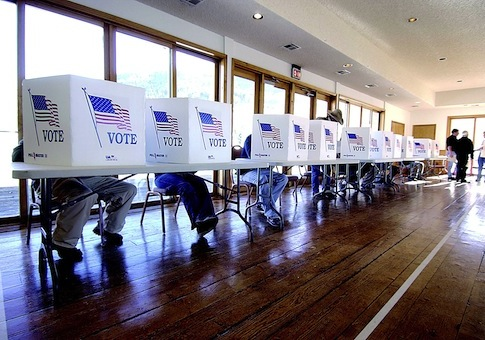

If you are a US resident of voting age, you’ve certainly heard people complain about the perceived un-impactfulness of their vote. We have created a tool which allows anyone to follow a vote from the start of the caucuses and primaries, up until the general election. Play around with it, and then make up your own mind as to whether your vote really is as un-impactful as it may seem.
Of course your vote can only be meaningful if you are legally able to in the first place. If you are above the age of 18 and are not currently a registered voter, please do so!
As is with the complicate democratic process the US uses, every state conducts their delegate-allotment processes slightly differently. Thus, we need to know which state you are currently from before we proceed.
Not registered? Register here.
Unfortunately, you are actually ineligable to vote in your state for the party elections. Either register with a party, or move. =(
Each state gets to choose who is allowed to participate in the non-general election. Some states require party registration, some allow anyone to vote.
{{currentState.name}} runs closed elections, so voters need to be registered with the party they plan to vote for in pre-general elections.
{{currentState.name}} runs open elections, so voters do not need to be registered with the party they plan to vote for in the pre-general elections, although they must choose only one party to vote.
{{currentState.name}} runs a mixed election, so voters in your state can vote in a variety of ways, depending on your state. Some will include everyone on one ballot, some will only allow registered members of a party to only vote for that party but still allow independents to vote as they choose, and more.
The blue bubbles represent registered Democrats, the red bubbles represent registered Republicans, and the green bubbles represent everyone else.
Your state is closed, so you can see that all the blue bubbles can only go to the Democratic voting areas, and are not allowed into the Republican voting areas. The reverse is true for the red bubbles. The green bubbles are not registered for either, and cannot vote in either party.
Your state is open, so you can see that all of the bubbles of any color can go vote in any voting booth, or none at all.
Your state is too complicated for a version 0 product to supply....
Funny enough, your vote doesn't vote to elect a candidate, your vote counts towards electing a person to elect a candidate for you. This person is called a delegate, and their job is to represent your vote in the elections outside of your district.
However, in {{currentState.name}}, there is a small caveat. Your state's delegates are unbound, which means that although delegates are awarded depending on the results of your vote, delegates can still decide to vote according to their own views, regardless of the results of your state. Although this rarely happens, it is still something to be aware of.
Many states have different ways of calculating how your vote transfers over towards a delegate, but first we have to talk about how your vote is collected in the first place
Your party in this state holds a {{currentState[partySelection].method}} to choose its delegates
A caucus is a system of local gatherings where voters decide which candidate to support and select delegates for nominating conventions. Caucuses are unique in that they allow participants to openly show support for candidates. Voting is often done by raising hands or breaking into groups according to the candidate participants support. The results of the caucus are used to determine the delegates present at county, state and national nominating conventions of each political party. Most often, only registered voters can participate in a caucus, and they are limited to the caucus of the party with which they are affiliated.
A primary is a statewide voting process in which voters cast secret ballots for their preferred candidates. Similar to the general election process, primary voters cast secret ballots for the candidates of their choosing. For those who have ever voted before, from a general election to a school class president, this will feel very familiar.
Now that we know how your vote is cast, and that your vote actually goes towards delegate representation, we now know that your vote will go to a delegate that matches your views, right? Well, not always.
Thankfully, your state and party vote in caucuses, so it really is that easy! Your vote is proportional, which means that if your vote represents 60% of the people in your voting district, 60% of the delegates are going to vote for the person you wanted to see in office.
Thankfully, {{currentState.name}} is proportional, so it really is that easy. If your vote represents 60% of the people in your voting district, 60% of the delegates are going to vote for the person you wanted to see in office.
Now, {{currentState.name}} is a bit different. Your state is Winner Take Most, which means that some delegates are reserved for the winner of the primary/caucus, and others are divided proportionally to the outcome of vote. So, if you voted in the majority of your state, your vote is more represented than people with other views. However, if you are in the minority, your vote will be represented less than those with the majority view.
{{currentState.name}} is actually very different than this system. Your state is Winner Take All, which means that all delegates are awarded to the winner of a primary. If you are a part of the majority vote, your vote will be overrepresented by a large degree. If your vote is not part of the majority, your vote will actually not count towards electing a candidate. Bummer.
Every state has a certain number of delegates used, to represent the population of your state compared to population of the United States as a whole. If you live in a heavily populated state, you will have more delegates than a sparsely-populated state. Your state is allotted {{currentState.democratic.delegates}} democratic delegates and {{currentState.republican.delegates}} republican delegates
Important Label Heading
100%
State label
Republican:
Democrat:
Let's check out how {{currentState.name}} fits in with the rest of the United States. Click the filters to highlight states that fit within to a category, or hover to learn even more. WIP WIP WIP